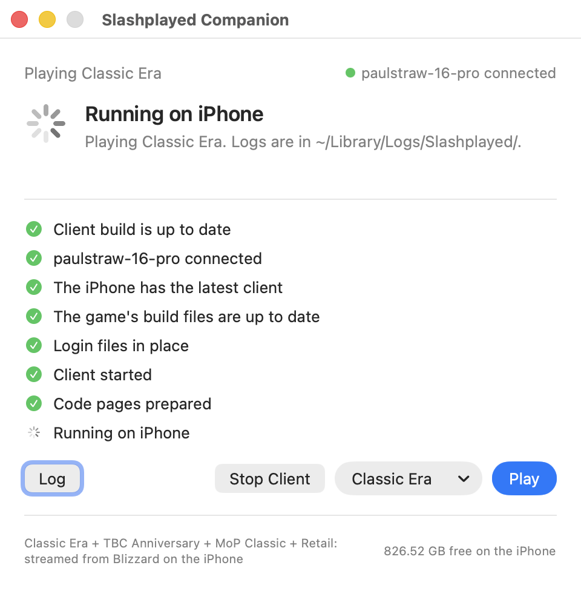
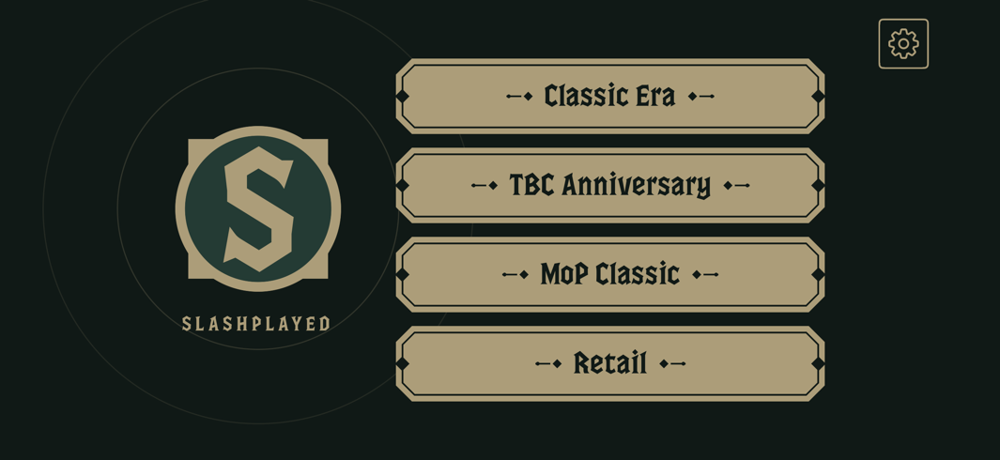

Free · Open source
Slashplayed
Play the Mac World of Warcraft clients, unmodified, on M1-or-later iPads, iPhone 15 Pro and later, and Apple Vision Pro.
Free and open source (MIT). Early and experimental. For macOS 15 or later on Apple Silicon.
Experimental, for iPad and iPhone: Windows · Linux (x86_64) · Linux (ARM)
Unofficial, and at your own risk
Slashplayed is not affiliated with, endorsed by, or supported by Blizzard Entertainment.
It includes no Blizzard files: the game comes from Blizzard’s own servers. You need your own Battle.net account and an active subscription.
Use it at your own risk. Your account could be actioned. Slashplayed is early and experimental: expect rough edges, and a game patch can break it until Slashplayed catches up.
How it works
Slashplayed is a compatibility layer that runs the unmodified Mac game clients on iPadOS, iOS, and visionOS. Slashplayed Companion, a Mac app, does the setup.
Set up on your Mac
The Companion builds the Slashplayed app and signs it with your own Apple ID. The game itself is never changed or signed.
Install on your device
It installs the app on your iPad, iPhone, or Apple Vision Pro, and copies the Mac game client from Blizzard to it.
Sign in and play
Sign in to Battle.net on the device. The game fetches its data from Blizzard as you play. After that, your Mac isn’t needed.
What you’ll use
Two apps, both ours: the Companion on your Mac, and Slashplayed on your device.


The games
The Mac clients, as Blizzard ships them.
- NewForever
-
Classic Era
Includes Hardcore and Season of Discovery: switch the game mode in game.
- TBC Anniversary
- MoP Classic
- Retail
Requirements
- A Mac with Apple Silicon, macOS 15 or later, and Xcode.
- An Apple ID in Xcode.A free Apple ID works: the app is signed again every 7 days. A paid Apple Developer Program membership signs it for a year.
- A supported device, paired with your Mac, with Developer Mode on:an iPad with M1 or later or the A17 Pro iPad mini (iPadOS 26), an iPhone 15 Pro or later (iOS 26), or Apple Vision Pro (visionOS 27).
- [Recommended] A keyboard and mouse, or game controller:With a controller only, an on-screen keyboard comes up for chat on an iPad or iPhone. A Vision Pro needs a hardware keyboard to type in the game. On an iPhone, turn on AssistiveTouch to use a mouse.
- A Battle.net account with an active World of Warcraft subscription.You sign in on the device. The game doesn’t need to be installed on the Mac.
- LocalDevVPN, free on the App Store.It must be on when the game starts. The Mac isn’t needed then.
- Free space on the device, as below.
| Game | About |
|---|---|
| Classic Era | 25 GB |
| Classic Era + TBC Anniversary | 37 GB |
| MoP ClassicAbout 23 GB of its own: a copy from the Mac takes the whole store the games share. | 150 GB |
| RetailNeeds a 512 GB+ iPad or iPhone with 8 GB of memory. | 150 GB |
A game that fetches its own data grows toward these sizes as you play.